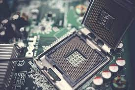
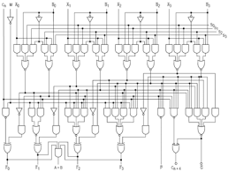
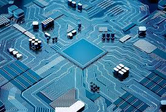
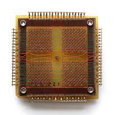
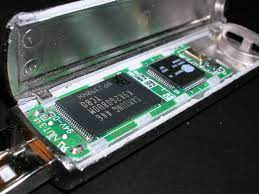

Computer Hardware
Input Device
An input device is a piece of equipment used to provide data and control signals to an information processing system such as a computer or information appliance. Examples of input devices include keyboards, mouse, scanners, cameras, joysticks, and microphones[Back to Table of content]

Output Device
An output device is any piece of computer hardware equipment which converts information into human readable form. It can be text, graphics, tactile, audio, and video. Some of the output devices are Visual Display Units (VDU) i.e. a Monitor, Printer graphic Output devices, Plotters, Speakers etc.[Back to Table of content]

CPU
A central processing unit (CPU), also called a central processor, main processor or just processor, is the electronic circuitry that executes instructions comprising a computer program. The CPU performs basic arithmetic, logic, controlling, and input/output (I/O) operations specified by the instructions in the program. This contrasts with external components such as main memory and I/O circuitry, and specialized processors such as graphics processing units (GPUs).[Back to Table of content]

ALU
An arithmetic logic unit (ALU) is a combinational digital circuit that performs arithmetic and bitwise operations on integer binary numbers. This is in contrast to a floating-point unit (FPU), which operates on floating point numbers. It is a fundamental building block of many types of computing circuits, including the central processing unit (CPU) of computers, FPUs, and graphics processing units (GPUs).[Back to Table of content]

Control Unit
The control unit (CU) is a component of a computer's central processing unit (CPU) that directs the operation of the processor. It tells the computer's memory, arithmetic logic unit and input and output devices how to respond to the instructions that have been sent to the processor.[Back to Table of content]

RAM
Randomn access memory (RAM) is a form of computer memory that can be read and changed in any order, typically used to store working data and machine code. A random-access memory device allows data items to be read or written in almost the same amount of time irrespective of the physical location of data inside the memory. In contrast, with other direct-access data storage media such as hard disks, CD-RWs, DVD-RWs and the older magnetic tapes and drum memory, the time required to read and write data items varies significantly depending on their physical locations on the recording medium, due to mechanical limitations such as media rotation speeds and arm movement.[Back to Table of content]

Optical Memory
Optical storage is any storage type in which data is written and read with a laser. Typically, data is written to optical media, such as compact discs (CDs) and DVDs.[Back to Table of content]

Magnetic Memory
Magnetic memory is the main way how data is being stored on magnetic medium. It is how data is stored on devices like hard drive which is the device people use to store documents audios and videos in their computers.[Back to Table of content]

Flash Memory
Flash memory, also known as flash storage, is a type of nonvolatile memory that erases data in units called blocks and rewrites data at the byte level. Flash memory is widely used for storage and data transfer in consumer devices, enterprise systems and industrial applications.[Back to Table of content]

Logic Gates
Logic gates are the basic building blocks of any digital system. It is an electronic circuit having one or more than one input and only one output. The relationship between the input and the output is based on a certain logic. Based on this, logic gates are named as AND gate, OR gate, NOT gate etc.[Back to Table of content]